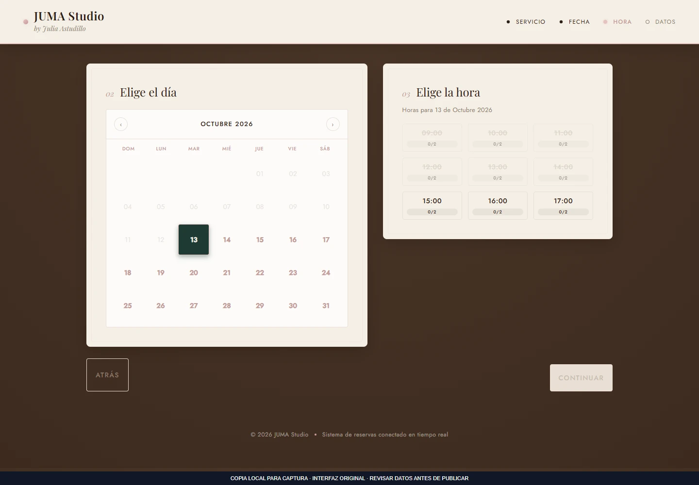
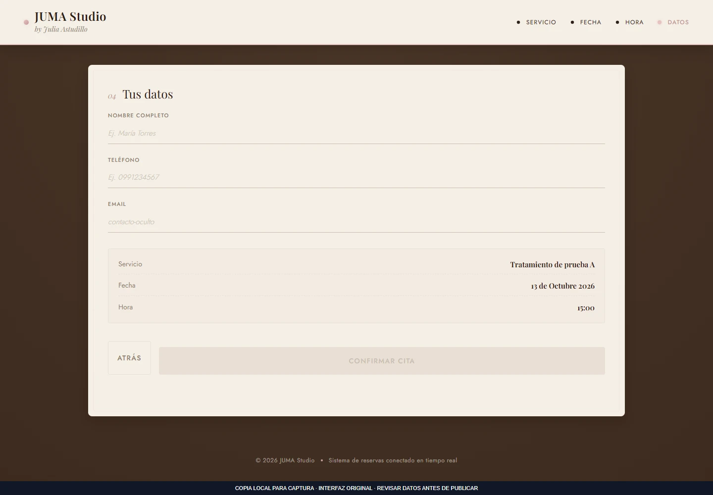

Aplicaciones web
DemoReservas para spa
Flujo de reservas por sucursal, servicio, día y horario, acompañado de un panel de administración.
Qué resuelve
Flujo de reservas por sucursal, servicio, día y horario, acompañado de un panel de administración.
Funciones implementadas
- Selección de sucursal y servicio
- Calendario y consulta de disponibilidad
- Validación del formulario de reserva
- Administración de sucursales, servicios y horarios
- Actualización de reservas mediante suscripción
Demostración pública no disponible. Puedes consultar el alcance o solicitar una presentación.
Consultar sobre este proyecto ↗VISTA DEL PROYECTO
Fotografías y capturas · 3
Selecciona una imagen para ampliarla. Usa las flechas para recorrer la galería.
 Ampliar ↗
Ampliar ↗

Ampliar ↗

Ampliar ↗EN LA PRÁCTICA
Selección de una cita
- 1
Seleccionar sucursal y servicio.
- 2
Elegir un día y consultar horarios disponibles.
- 3
Completar los datos y revisar la solicitud de reserva.
El sistema original consulta Supabase. Este ejemplo usa horarios ficticios y no envía reservas.
Probar ejemplo de uso ↗Añadir fotos a este proyecto ↗
Abre primero el gestor local con python tools/manage_media.py.